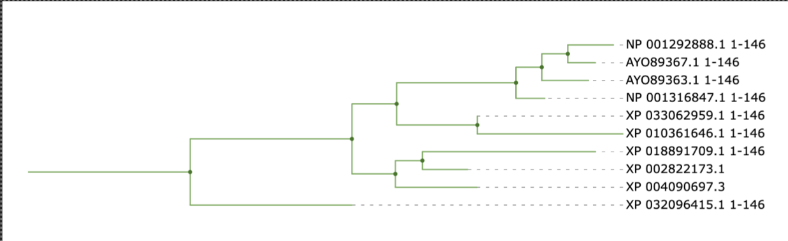

Informação
Com a ajuda do iTOL, construiu-se esta árvore Filogenética.
Analisando-a verificamos que tem 9 pontos de divergência, que ocorreram ao longo da evolução através de mutações e variabilidade genética.
A primeira ramificação, a mais antiga, deu origem à sequência XP032096415.1_1-146 e o outro ramo dará origem às outras sequências. Esse ramo vai voltar a ramificar-se dando a origem a outros dois que vão originar as sequências XP004090697.3, XP002822173.1 e XP_018891709.1_1-146 e XP010361646.1_1-146, XP_033062959.1_1-146, NP_001316847.1_1-146, AYO89363.1_1-146, AYO89367.1_1-146 e NP_001292888.1_1-146.
A sequencia XP032096415.1_1-146 é a que apresenta uma relação mais distante com as outras sequências neste conjunto, principalmente com a NP_001292888.1_1-146 e AYO89367.1_1-146. Ou seja, quando mais divergências ocorrerem mais distantes são as sequências do conjunto. Se as sequências derivarem da mesma ramificação, então elas são mais relacionadas entre si, apresentando menos variações de aminoácidos/nucleótidos, como é o caso das sequências NP_001292888.1_1-146 e AYO89367.1_1-146 ou XP010361646.1_1-146 e XP_033062959.1_1-146.